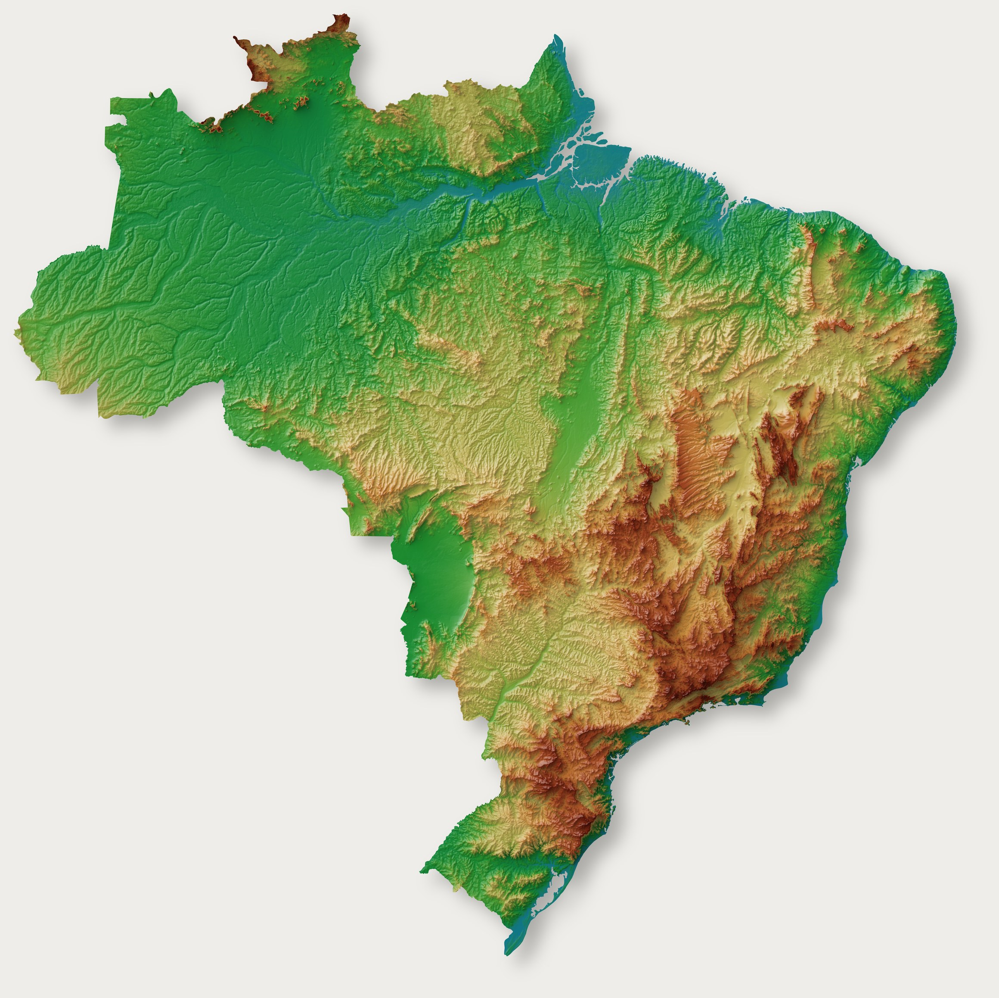
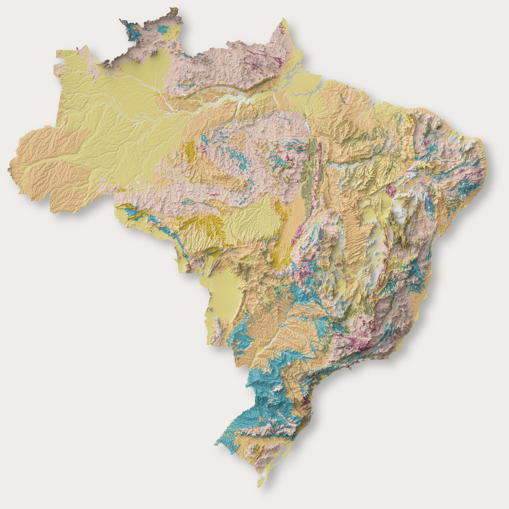
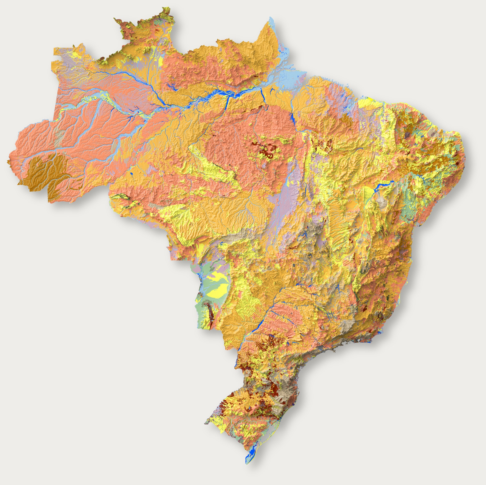
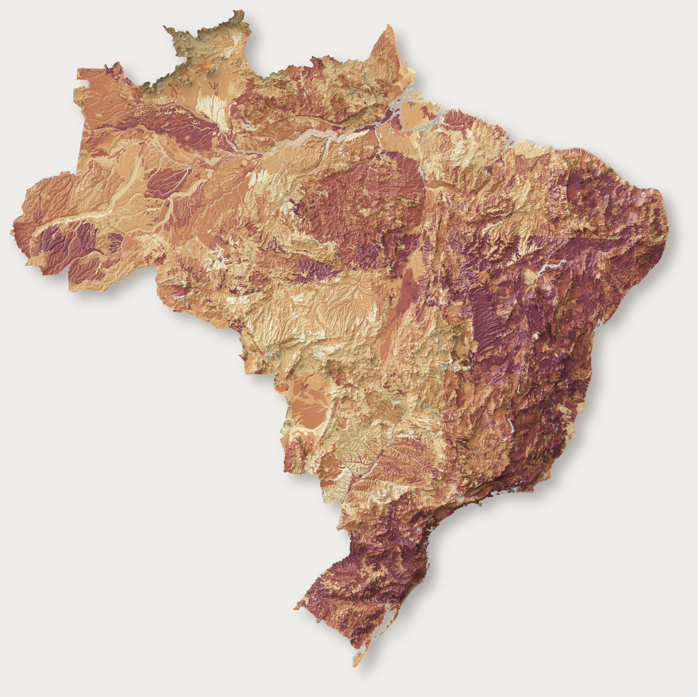
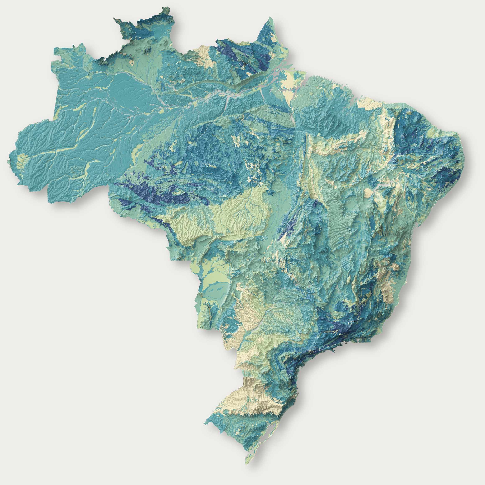
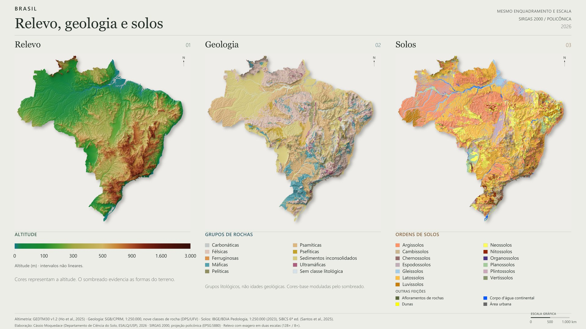
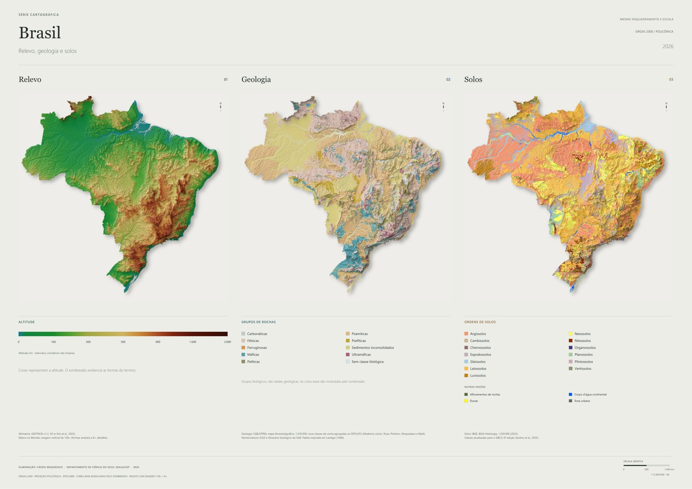

Relevo
Elevação e formas do terreno
Relevo, geologia, solos e diversidade do território sobre o mesmo relevo sombreado.
CÁSSIO MOQUEDACE · ESALQ/USP

Escolha dois temas no mesmo enquadramento. No celular, alterne entre eles sem sair da seção.
Elevação e formas do terreno
Grupos de rochas sobre relevo sombreado

Ordens do Sistema Brasileiro de Classificação de Solos

Componentes de solo por unidade de mapeamento

Litologias por unidade litoestratigráfica

Relevo, geologia e solos no mesmo enquadramento e na mesma escala.


Arraste para mover. Use + e − ou o gesto de pinça para aproximar e afastar. Troque o tema mantendo o enquadramento.
Nas diversidades, a contagem descreve a unidade de mapeamento. As bases temáticas são de 1:250.000; os 30 m referem-se ao relevo. A pirâmide do visualizador usa imagens de até 120 m por pixel.
A prancha A0 em PDF tem a imagem do mapa a cerca de 300 dpi no tamanho impresso, com títulos e legendas vetoriais. A versão original, para gráfica, é a mesma prancha sem recompressão da imagem. Imprima em 100%, sem ajustar à página, para manter a escala indicada.
| Mapa | Prancha A0 (tela e impressão comum) | A0 original (gráfica) | Versão de tela | |
|---|---|---|---|---|
| 01 · Relevo | PDF (13 MB) | PDF (120 MB) | PNGPDF | |
| 02 · Geologia | PDF (14 MB) | PDF (102 MB) | PNGPDF | |
| 03 · Solos | PDF (19 MB) | PDF (112 MB) | PNGPDF | |
| 04 · Diversidade pedológica | PDF (15 MB) | PDF (108 MB) | PNGPDF | |
| 05 · Diversidade litológica | PDF (14 MB) | PDF (103 MB) | PNGPDF | |
| Relevo, geologia e solos · conjunto | PDF A0 deitado (11 MB) | PDF (60 MB) | PNG 3840 × 2160PDF |
Elaboração: Cássio Moquedace, Departamento de Ciência do Solo, ESALQ/USP, 2026.
Moquedace, C. M. (2026). Brasil: relevo, geologia, solos e diversidade. Série cartográfica com relevo sombreado a 30 m. Departamento de Ciência do Solo, ESALQ/USP. https://moquedace.github.io/brazil_shaded_relief_maps/
Mapas e textos sob Creative Commons Atribuição 4.0 (CC BY 4.0): livre uso com citação da autoria e das fontes dos dados. Código sob licença MIT, no repositório do projeto.
Elaboração: Cássio Moquedace (Departamento de Ciência do Solo, ESALQ/USP), 2026.
Os dados de origem não são redistribuídos aqui: consulte as fontes acima. Código e documentação em github.com/moquedace/brazil_shaded_relief_maps.